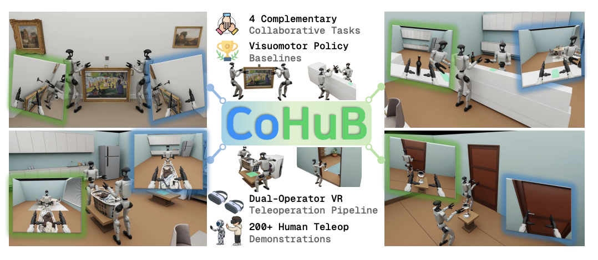
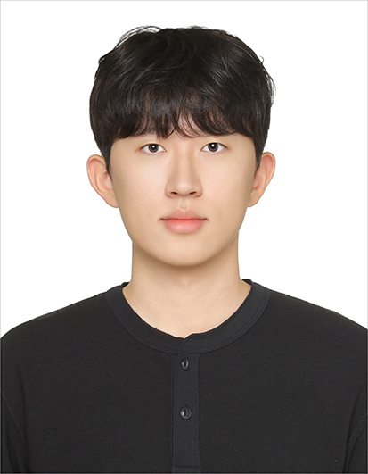

2026
CoHuB: A Collaborative Humanoid Loco-Manipulation Benchmark
Under Review, 8th Robot Learning Workshop, NeurIPS 2026

B.S. Student, School of Mechanical Engineering · Yonsei University
Hi, I'm a third-year undergraduate in Mechanical Engineering at Yonsei University. My research interests lie in robot learning, with a current focus on humanoid locomotion, manipulation, and whole-body control.
I'm currently an undergraduate research intern at the RoPhi (Robotics and Physical AI) Lab at Yonsei University, advised by Prof. Yonghyeon Lee. I previously worked as an undergraduate research intern at the Machine Learning and Control Systems Laboratory (MLCS).

Individual research project at MLCS (summer internship). Trained an RL policy for a Unitree G1 humanoid using a Generative Motion Prior (CVAE-based) in place of AMP's discriminator. Diagnosed and fixed a task/guidance reward conflict, producing more natural, periodic walking with more stable training dynamics.
Advisor: Prof. Yonghyeon Lee
Advisor: Prof. Jongeun Choi